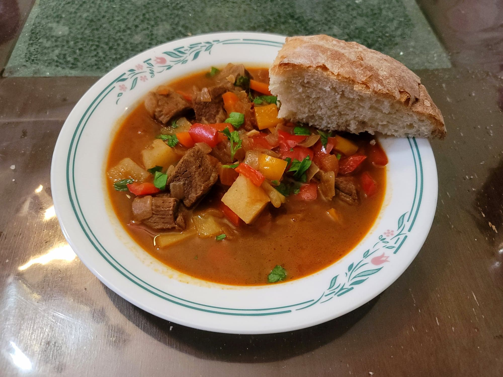

Gulyás (Goulash)

Ingredients:
- 1 1/2 lb Stewing beef cubes
- 3 tbsp Lard
- 3 Onions, diced
- 5 cloves Garlic, minced
- 2 Red bell peppers, finely chopped, 1/2" pieces
- 1 Yellow bell pepper, finelt chopped, 1/2" pieces
- 2 medium Tomatoes, diced
- 1/4 cup Paprika, Hungarian paprika or not smoked
- 1 tsp Salt
- 1/2 tsp Black pepper
- Optional: 1/2 tsp Caraway seeds, crushed
- 1 Bay leaf
- 5 cups Water or Beef broth
- 2 medium Potatoes, 1/2" cubed
- 2 medium Carrots, halved and then sliced
- 3 tbsp Parsley, chopped
Instructions:
- In a large pot, heat the lard over medium-high heat. Add in the onions and sauté until starting to brown, about 10 minutes. Then add in the beef and sauté until browned, about another 7-10 minutes. Add in the garlic, bell peppers, and tomatoes and sauté until softened, 6-8 minutes.
- Remove from the heat and stir in the paprika, salt, pepper, and caraway seeds. Then stir in the beef broth and bay leaf and return to the heat. Bring to a boil and then reduce to a simmer. Cook covered over medium heat for about 40 minutes.
- Add in the carrots and potatoes. Return to a boil and then reduce back to medium. Cook covered for 40 more minutes.
- Taste and add salt as needed. Garnish with parsley and serve immediately with crusty bread such as artisan bread.